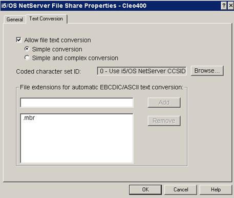

| AS2 Checklist / AS/400 PC Network Access Setup | |
Through iSeries Client Access for Windows, you may map an AS/400 file share with a Windows network drive and view its contents through Windows Explorer. By default, the contents of AS/400 files are stored in EBCDIC, which cannot be viewed through Windows.
To allow automatic conversion of your files to ASCII format, follow this simple procedure:
1. Open System i Navigator and select the File Shares item:
2. Right-click on the File Shares item and select the Open i5/OS NetServer option:
3. Right-click on the file share that you have mapped into Windows and the select Properties option:
4. Select the Allow file text conversion checkbox and add the file extensions of all files that you will be viewing through Windows. In the example below, all .mbr files will automatically be converted:
